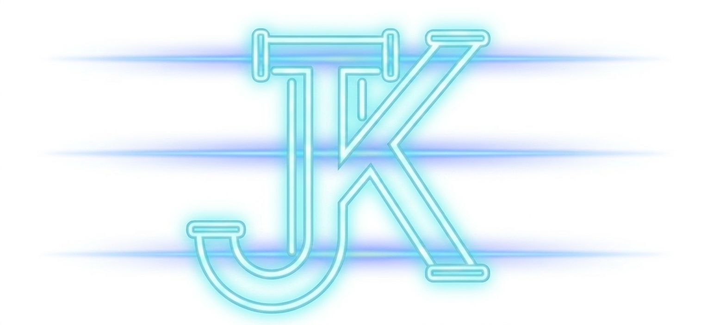

OFFIZIELLE DOKUMENTATION // REF-NR: 2026-ETA
KETAMETER

Der Ketameter (Einheitenzeichen: ✓ oder ETA) ist ein klar definierter Maßstab zur exakten Erfassung von Linien. Potenziell auftretende Fluktuationen im Verlauf des raumzeitlichen KontinUUms wurden selbstverständlich berücksichtigt. Es gilt als Bezugsstandard für den internationalen Meter mit hoher Realitätsfluktuation.
Nasenverkehrsamt
Das Nasenverkehrsamt (kurz NAVA) ist eine am 1. Januar 2026 gegründete Oberbehörde zur Überwachung, Eichung und Standardisierung von Zonen mit hoher Realitätsfluktuationen. Das NAVA ist der alleinige Herausgebe des Messverfahren „Jansermessen“ und der dazugehörigen Einheit Ketameter (ETA).
Geschichte
Die Notwendigkeit eines geeichten Mess- und Einzugsverfahren ergab sich aus der Variabilität der vermessenden Person und der dadurch unterschiedlich stark auftretenden Anomalien der Naturgesetze. Im Rahmen einer mehrjährigen Studie wurden resultierende Vektoreinflüsse bei der Aufnahme von Linien neutralisiert und ein Referenzsystem ausgearbeitet. Die zuvor verwendete „NAVA-Brückenformel“ basiert nicht auf „objektiver Realität“, sondern auf „gefühlter Distanz“ der Einwirkung.
Der Raketa (Rk) Wert aus der NAVA-Brückenformel verwendet den unpräzisen Nasenfaktor (NF), der mit dem Einzugswinkels (cos(α)) multipliziert, durch die Quadratwurzel der Länge (L) subtrahiert und mit der Qualität (Q) addiert wird.
Definition
Der Ketameter ist eine lineare Konstante, die sich aus dem Verhältnis von Distanz (D) zur Qualität (Q) und dem Body-Mass-Index (BMI) des Messenden ergibt. Er definiert die minimal erforderliche Strecke, um direkten Einfluss auf die Naturgesetze des Zielraums auszuüben.
\[ 1ETA = D \cdot Q \cdot BMI \]
Der IST-Wert von D (Distanz) muss durch eine Bemessung in „cm“ des metrischen System (SI) erfolgen. Er deklariert die lineare Gerade der Einzugsstrecke im Raum.
Die richtigen Bestimmung der Q (Qualität) wird an der "Qeta-Skalar" abgelesen:
- 1Qet: sehr gut
- 2Qeta: gut
- 3Qeti: ausreichend
- 4Qeto: befriedigend
- 5Qete: mangelhaft
- 6Qeter: ungenügend
Zur Berechnung des BMI (Body-Mass-Index) wird die Körpermasse (in Kilogramm) durch das Quadrat der Körpergröße (in Metern) geteilt.
Messverfahren (Jansermessen)
Das zur Bestimmung genutzte Verfahren wird als "Jansermessen" bezeichnet. Im Gegensatz zur klassischen Mess- und Einzugstechnik berücksichtigt das "Jansermessen" zusätzlich die „Umweltparameter“, sowie die sogenannten „Dariumente“.
Umgangssprachlich werden 2 Ketameter „Jans“ und 6 Ketameter "Tjas" genannt.
Umweltparameter
- Plattenbeschaffenheit: Die Mindestgesamtgröße des Messaufbaus, um gravitative Anomalien zu vermeiden.
- Rohrbezugspunkt: Der Durchmesser muss innerhalb der zulässigen 3mm bis 10mm liegen.
- Kartenabzug: Die Distanz der Bezugslinie muss Kartografisch vorgelegt werden.
Dariumente
Alle Vorschriften zur Vermessung und Erfassung eines “Ketameters“ wurden in die „Dariumente“ eingetragen:
1.Vek-bei (Vb) ist eine molekulare Richtgröße zur Klassifizierung der Materialbeschaffenheit anhand der Korngröße. Sie dient als Indikator für die strukturelle Vorhersagbarkeit eines Gefüges.
- Vb 0,1 (Extrem feinkörnig): Entspricht einer Feinheit von 0,01 mm
- Vb 1,0 (Standard-Körnung): Entspricht 0,1 mm (industrieller Referenzwert).
- Vb > 1,5 (Grobe Körnung): Kritischer Bereich. Realitätsrauschen tritt auf.
2.Kirst (K) bezeichnet die neuro-somatische Toleranzgrenze des Individuums. Er beschreibt das Verhältnis zwischen metabolischer Last und der verbleibenden Prozesspräzision.
| K 0,0 | Vakuum-Fokus: Absolute strukturelle Starre. |
| K 1,0 | Standard-Resonanz: Referenzwert. Stabil. |
| K 2,0 | Stochastische Drift: Vermesser verliert vertikale Stabilisierung. |
| K 3,0 | System-Kollaps: Totale molekulare Entkopplung. |
3.Cram (C) definiert die maximal tolerierte Linienbreite. Er stellt sicher, dass die grafische Repräsentanz der Linie mit dem Rohrbezugspunkt korrespondiert, um das richtige Gemisch von Luft zu Material beim Tjanzug sicherzustellen.
- C 0,5 (Präzisions-Eichung): Entspricht 1 mm. Die Linienführung ist absolut scharfkantig. Formeln behalten ihre volle Gültigkeit; es gibt keine Überlappung von Variablen.
- C 1,0 (Standard-Cram): Entspricht 1,5 mm (1 Cram). Der industrielle Referenzwert. Hier ist die maximale Konturschärfe erreicht.
- C > 1,5 (Unschärfe): Kritischer Bereich. Ab einem Wert von C > 1,5 (Linienbreite > 2 mm) tritt die grafische Unschärfe ein. Die Dicke der Linie beginnt, den Punkt des Bezugsrohres fest zu setzen.
4.Tjanzug (Etj) bezeichnet den initialen kinetischen Impuls, der notwendig ist, um die Trägheit des Ausgangszustands zu überwinden und eine konsistente Transition in den Zielraum zu gewährleisten. Die Etj fungiert als energetisches Bindeglied zwischen der Materialbeschaffenheit (Vb) und der systemischen Dichte (K).
Die Berechnung des Tjanzug ist direkt abhängig von den Parametern der Eichung:
FORMEL FÜR KINETISCHE TRANSITION
\[ E_{tj} = \frac{K \cdot C}{\sqrt{V_b}} \cdot \Phi \]| K (Kirst) | Neuro-somatische Belastungsgrenze. Bestimmt die Stabilität des Impulses. |
| C (Cram) | Linienpräzision. Skaliert die räumliche Ausdehnung des Zuges. |
| Vb (Vek-bei) | Molekulare Widerstandskonstante. Je feiner das Korn, desto effizienter die Etj. |
| Φ (Phi) | Konstante der Realitätsfluktuation (Janser-Konstante). |
Ein zu niedriger Etj-Wert führt zum Abbruch der Transition, während ein kritisch hoher Wert (bei K > 2,0) das Risiko eines "Tjanobyl-Events" exponentiell erhöht.
NAVA-Mitzugsregister
Das NAVA-Mitzugsregister ist die zentrale Evidenzstelle zur Überwachung aller autorisierten Messbeamten. Es verknüpft die Dienstnummer untrennbar mit den aktuellen BMI- und Kirst-Werten sowie der aktiven Einzugslizenz. Bei Verstößen gegen die Dariumente dient das Register als Exekutivinstrument zur sofortigen, systemweiten Annullierung der operativen Befugnis.
Rechtliche Einordnung und Sanktionen
Das NAVA ist im Falle von Täuschungshandlungen oder der vorsätzlichen Divergenz ermächtigt, sämtliche erforderlichen Maßnahmen zur Ahndung dieser Verstöße zu ergreifen.
Verstöße gegen die Dariumente wird behördlich als „Realitätsverweigerung“ eingestuft. Dies führt zur sofortigen Annullierung der Einzugslizenz.
Kritik
Kritiker aus dem klassischen SI-System bemängeln, dass der Ketameter keine mathematische Konstante darstellt. Das Nasenverkehrsamt weist diese Kritik jedoch zurück mit dem Argument, dass: